30 Condition Variables (Biến điều kiện)
Cho đến nay, chúng ta đã phát triển khái niệm lock (khóa) và thấy cách xây dựng một lock đúng đắn với sự kết hợp hợp lý giữa hỗ trợ từ hardware (phần cứng) và OS (hệ điều hành). Tuy nhiên, lock không phải là primitive (nguyên thủy) duy nhất cần thiết để xây dựng các chương trình concurrent (đồng thời).
Đặc biệt, có nhiều trường hợp một thread (luồng) muốn kiểm tra xem một condition (điều kiện) nào đó có đúng hay không trước khi tiếp tục thực thi. Ví dụ, một parent thread (luồng cha) có thể muốn kiểm tra xem child thread (luồng con) đã hoàn thành hay chưa trước khi tiếp tục (thường được gọi là join()); vậy việc chờ này nên được triển khai như thế nào? Hãy xem Hình 30.1.
void *child(void *arg) {
printf("child\n");
// XXX làm sao để báo là đã xong?
return NULL;
}
int main(int argc, char *argv[]) {
printf("parent: begin\n");
pthread_t c;
Pthread_create(&c, NULL, child, NULL); // child
// XXX làm sao để chờ child?
printf("parent: end\n");
return 0;
}
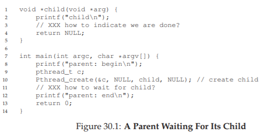
Hình 30.1: Parent chờ Child
Điều chúng ta muốn thấy ở đây là kết quả sau:
parent: begin
child
parent: end
Chúng ta có thể thử dùng một biến chia sẻ, như trong Hình 30.2. Giải pháp này nhìn chung sẽ hoạt động, nhưng cực kỳ kém hiệu quả vì parent sẽ spin (quay vòng chờ) và lãng phí thời gian CPU. Điều chúng ta muốn ở đây là một cách để đưa parent vào trạng thái sleep (ngủ) cho đến khi điều kiện mà ta đang chờ (ví dụ: child đã hoàn thành) trở thành đúng.
volatile int done = 0;
void *child(void *arg) {
printf("child\n");
done = 1;
return NULL;
}
int main(int argc, char *argv[]) {
printf("parent: begin\n");
pthread_t c;
Pthread_create(&c, NULL, child, NULL); // child
while (done == 0)
; // spin
printf("parent: end\n");
return 0;
}
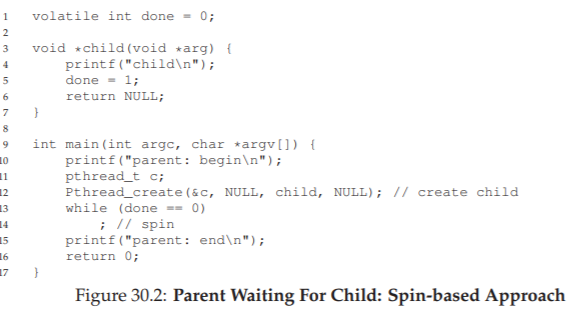
Hình 30.2: Parent chờ Child – Cách tiếp cận Spin-based
THE CRUX: HOW TO WAIT FOR A CONDITION
Trong các chương trình đa luồng, việc một thread chờ cho đến khi một điều kiện trở thành đúng trước khi tiếp tục là rất hữu ích. Cách tiếp cận đơn giản là spin cho đến khi điều kiện đúng, nhưng điều này cực kỳ kém hiệu quả và lãng phí chu kỳ CPU, và trong một số trường hợp có thể không chính xác. Vậy, một thread nên chờ điều kiện như thế nào?
30.1 Định nghĩa và các hàm (Definition and Routines)
Để chờ một điều kiện trở thành đúng, một thread có thể sử dụng cái gọi là condition variable (biến điều kiện). Condition variable là một explicit queue (hàng đợi tường minh) mà các thread có thể tự đưa mình vào khi một trạng thái thực thi nào đó (tức là một điều kiện) chưa như mong muốn (bằng cách wait trên condition); một thread khác, khi thay đổi trạng thái đó, có thể wake (đánh thức) một (hoặc nhiều) thread đang chờ và cho phép chúng tiếp tục (bằng cách signal trên condition).
Ý tưởng này bắt nguồn từ việc Dijkstra sử dụng “private semaphores” [D68]; một ý tưởng tương tự sau đó được Hoare đặt tên là “condition variable” trong công trình của ông về monitor [H74].
Để khai báo một condition variable, ta chỉ cần viết như sau:
pthread_cond_t c;
Điều này khai báo c là một condition variable (lưu ý: cần khởi tạo đúng cách). Một condition variable có hai thao tác liên quan: wait() và signal().
- Lời gọi
wait()được thực thi khi một thread muốn tự đưa mình vào trạng thái ngủ. - Lời gọi
signal()được thực thi khi một thread đã thay đổi điều gì đó trong chương trình và muốn đánh thức một thread đang ngủ chờ trên condition này.
Cụ thể, các call POSIX trông như sau:
pthread_cond_wait(pthread_cond_t *c, pthread_mutex_t *m);
pthread_cond_signal(pthread_cond_t *c);
Chúng ta thường gọi tắt là wait() và signal cho đơn giản. Một điều bạn có thể nhận thấy về wait() là nó cũng nhận một mutex làm tham số; nó giả định rằng mutex này đang được lock khi wait() được gọi.
Nhiệm vụ của wait() là release (nhả) lock và đưa thread gọi hàm vào trạng thái ngủ (atomically – nguyên tử); khi thread được đánh thức (sau khi một thread khác signal nó), nó phải re-acquire (lấy lại) lock trước khi trả quyền điều khiển về cho caller. Sự phức tạp này xuất phát từ mong muốn ngăn chặn một số race condition xảy ra khi một thread đang cố tự đưa mình vào trạng thái ngủ.
Hãy xem giải pháp cho bài toán join (Hình 30.3) để hiểu rõ hơn.
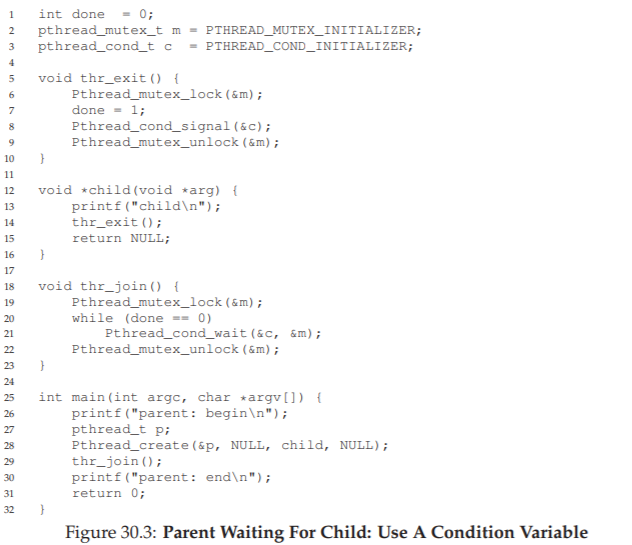
Hình 30.3: Parent chờ Child – Sử dụng Condition Variable
Có hai trường hợp cần xem xét:
-
Trường hợp 1: Parent tạo child thread nhưng tiếp tục chạy (giả sử chỉ có một CPU) và ngay lập tức gọi
thr_join()để chờ child hoàn thành. Trong trường hợp này, nó sẽ acquire lock, kiểm tra xem child đã xong chưa (chưa), và đưa mình vào trạng thái ngủ bằng cách gọiwait()(do đó nhả lock). Child sẽ chạy, in ra “child”, và gọithr_exit()để đánh thức parent; đoạn code này chỉ cần acquire lock, đặt biến trạng tháidone, và signal parent để đánh thức nó. Cuối cùng, parent sẽ chạy (trở về từwait()với lock đang giữ), unlock, và in ra “parent: end”. -
Trường hợp 2: Child chạy ngay khi được tạo, đặt
done = 1, gọisignalđể đánh thức một thread đang ngủ (nhưng không có thread nào, nên chỉ return), và kết thúc. Parent sau đó chạy, gọithr_join(), thấydone = 1, nên không chờ và return.
Một lưu ý cuối: bạn có thể thấy parent dùng vòng lặp while thay vì chỉ if khi quyết định có chờ trên condition hay không. Mặc dù theo logic chương trình thì điều này có vẻ không bắt buộc, nhưng đây luôn là một ý tưởng tốt, như chúng ta sẽ thấy ở phần sau.
Để đảm bảo bạn hiểu tầm quan trọng của từng phần trong code thr_exit() và thr_join(), hãy thử một vài cách triển khai thay thế. Đầu tiên, bạn có thể tự hỏi liệu chúng ta có cần biến trạng thái done hay không. Điều gì sẽ xảy ra nếu code trông như ví dụ dưới đây? (Hình 30.4)
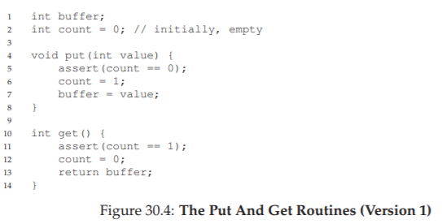
Hình 30.4: Parent Waiting – Không có biến trạng thái
Đáng tiếc, cách tiếp cận này bị lỗi. Hãy tưởng tượng trường hợp child chạy ngay lập tức và gọi thr_exit() ngay lập tức; trong trường hợp này, child sẽ thực hiện signal, nhưng không có thread nào đang ngủ trên condition. Khi parent chạy, nó sẽ chỉ đơn giản gọi wait và bị kẹt; sẽ không có thread nào đánh thức nó. Từ ví dụ này, bạn có thể thấy tầm quan trọng của biến trạng thái done; nó lưu trữ giá trị mà các thread quan tâm. Việc ngủ, đánh thức và khóa đều được xây dựng xoay quanh biến này.
Dưới đây (Hình 30.5) là một cách triển khai kém khác. Trong ví dụ này, ta giả định rằng không cần giữ lock để thực hiện signal và wait. Vấn đề gì có thể xảy ra ở đây? Hãy suy nghĩ1!
void thr_exit() {
done = 1;
Pthread_cond_signal(&c);
}
void thr_join() {
if (done == 0)
Pthread_cond_wait(&c);
}
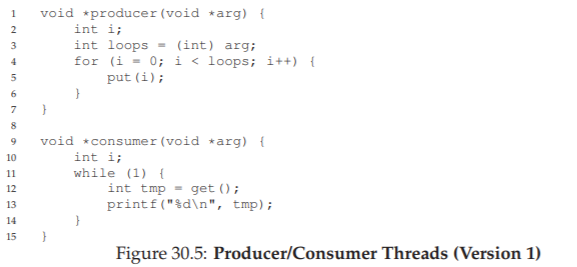
Hình 30.5: Parent Waiting – Không có lock
Vấn đề ở đây là một race condition tinh vi. Cụ thể, nếu parent gọi thr_join() và sau đó kiểm tra giá trị của done, nó sẽ thấy giá trị là 0 và do đó cố gắng đi ngủ. Nhưng ngay trước khi nó gọi wait để ngủ, parent bị interrupt (ngắt), và child chạy. Child thay đổi biến trạng thái done thành 1 và thực hiện signal, nhưng không có thread nào đang chờ nên không thread nào được đánh thức. Khi parent chạy lại, nó sẽ ngủ mãi mãi — thật đáng buồn.
Hy vọng rằng, từ ví dụ join đơn giản này, bạn có thể thấy một số yêu cầu cơ bản để sử dụng condition variable một cách đúng đắn. Để đảm bảo bạn hiểu, chúng ta sẽ đi qua một ví dụ phức tạp hơn: bài toán producer/consumer hoặc bounded-buffer.
Lưu ý rằng ví dụ này không phải là code “thực”, vì call pthread_cond_wait() luôn yêu cầu một mutex cũng như một condition variable; ở đây, chúng ta chỉ giả định giao diện không yêu cầu mutex để minh họa ví dụ phản ví dụ.
TIP: LUÔN GIỮ LOCK KHI SIGNAL
Mặc dù không phải lúc nào cũng bắt buộc, nhưng đơn giản và tốt nhất là giữ lock khi thực hiện signal với condition variable. Ví dụ trên cho thấy một trường hợp bạn phải giữ lock để đảm bảo tính đúng đắn; tuy nhiên, cũng có một số trường hợp có thể không sao nếu không giữ, nhưng tốt nhất là nên tránh. Vì vậy, để đơn giản, hãy giữ lock khi gọisignal.
Ngược lại, việc giữ lock khi gọiwaitkhông chỉ là một mẹo, mà là bắt buộc theo ngữ nghĩa củawait, vìwaitluôn: (a) giả định lock đang được giữ khi bạn gọi nó, (b) nhả lock khi đưa thread gọi vào trạng thái ngủ, và (c) lấy lại lock ngay trước khi trả về. Do đó, có thể tổng quát hóa mẹo này: giữ lock khi gọisignalhoặcwait, và bạn sẽ luôn an toàn.
30.2 Bài toán Producer/Consumer (Bounded Buffer)
Bài toán đồng bộ hóa tiếp theo mà chúng ta sẽ gặp trong chương này được gọi là producer/consumer problem (bài toán nhà sản xuất/nhà tiêu thụ), hoặc đôi khi là bounded buffer problem (bài toán bộ đệm giới hạn), lần đầu được nêu ra bởi Dijkstra [D72]. Thực tế, chính bài toán producer/consumer này đã dẫn Dijkstra và các cộng sự phát minh ra generalized semaphore (semaphore tổng quát – có thể dùng như lock hoặc condition variable) [D01]; chúng ta sẽ tìm hiểu thêm về semaphore sau.
Hãy tưởng tượng có một hoặc nhiều producer thread (luồng sản xuất) và một hoặc nhiều consumer thread (luồng tiêu thụ). Producer tạo ra các data item (mục dữ liệu) và đặt chúng vào một buffer (bộ đệm); consumer lấy các mục này ra khỏi buffer và tiêu thụ chúng theo một cách nào đó. Mô hình này xuất hiện trong nhiều hệ thống thực tế. Ví dụ, trong một multi-threaded web server (máy chủ web đa luồng), một producer đặt các yêu cầu HTTP vào work queue (hàng đợi công việc – tức bounded buffer); các consumer thread lấy yêu cầu ra khỏi hàng đợi này và xử lý.
Một bounded buffer cũng được sử dụng khi bạn pipe (dùng đường ống) đầu ra của một chương trình vào chương trình khác, ví dụ:
grep foo file.txt | wc -l
Ví dụ này chạy hai process (tiến trình) đồng thời; grep ghi các dòng từ file.txt có chứa chuỗi foo vào cái mà nó nghĩ là standard output (đầu ra chuẩn); UNIX shell chuyển hướng đầu ra này vào một UNIX pipe (được tạo bởi system call pipe). Đầu còn lại của pipe này được kết nối với standard input (đầu vào chuẩn) của tiến trình wc, tiến trình này chỉ đơn giản đếm số dòng trong luồng đầu vào và in ra kết quả. Như vậy, tiến trình grep là producer; tiến trình wc là consumer; giữa chúng là một bounded buffer nằm trong kernel; còn bạn, trong ví dụ này, là người dùng hạnh phúc.
Vì bounded buffer là một tài nguyên chia sẻ, tất nhiên chúng ta phải yêu cầu synchronized access (truy cập đồng bộ) tới nó, nếu không2 sẽ xảy ra race condition. Để bắt đầu hiểu rõ hơn vấn đề này, hãy xem một số đoạn code thực tế. Điều đầu tiên chúng ta cần là một shared buffer (bộ đệm chia sẻ), nơi producer đặt dữ liệu vào, và consumer lấy dữ liệu ra. Để đơn giản, ta chỉ dùng một số nguyên (bạn hoàn toàn có thể tưởng tượng đặt một con trỏ tới một cấu trúc dữ liệu vào đây), và hai hàm nội bộ để đặt một giá trị vào buffer chia sẻ, và lấy một giá trị ra khỏi buffer. Xem Hình 30.6 (trang 6) để biết chi tiết.
Đây là lúc chúng ta dùng một chút tiếng Anh cổ điển, ở thể giả định (subjunctive form).
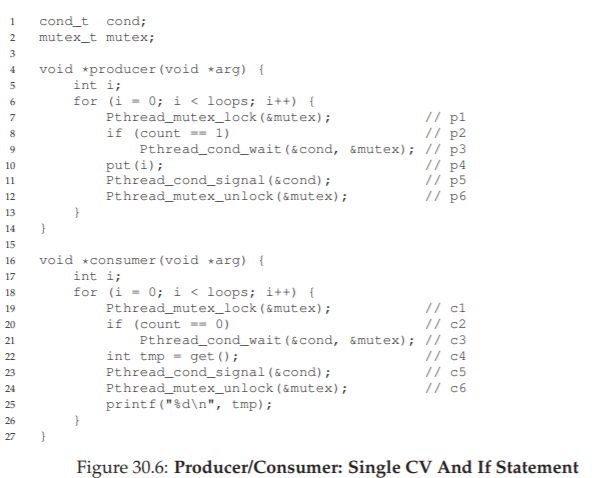
Hình 30.6: Các hàm Put và Get (phiên bản 1)
Khá đơn giản, đúng không? Hàm put() giả định rằng buffer đang rỗng (và kiểm tra điều này bằng một assertion), sau đó đơn giản đặt một giá trị vào shared buffer (bộ đệm chia sẻ) và đánh dấu nó là đầy bằng cách đặt count thành 1. Hàm get() làm điều ngược lại: đặt buffer về trạng thái rỗng (tức là đặt count thành 0) và trả về giá trị. Đừng lo lắng việc buffer chia sẻ này chỉ có một ô; sau này, chúng ta sẽ tổng quát hóa nó thành một queue (hàng đợi) có thể chứa nhiều phần tử, và điều đó sẽ còn thú vị hơn bạn tưởng.
Bây giờ, chúng ta cần viết một số hàm biết khi nào thì OK để truy cập buffer — hoặc để đặt dữ liệu vào, hoặc để lấy dữ liệu ra. Điều kiện cho việc này khá rõ ràng: chỉ đặt dữ liệu vào buffer khi count bằng 0 (tức là buffer rỗng), và chỉ lấy dữ liệu ra khi count bằng 1 (tức là buffer đầy). Nếu chúng ta viết code đồng bộ hóa mà để producer đặt dữ liệu vào một buffer đã đầy, hoặc consumer lấy dữ liệu từ một buffer rỗng, thì chúng ta đã làm sai (và trong code này, một assertion sẽ kích hoạt).
Công việc này sẽ được thực hiện bởi hai loại thread: một nhóm gọi là producer threads (luồng sản xuất), và nhóm còn lại gọi là consumer threads (luồng tiêu thụ). Hình 30.7 cho thấy code của một producer đặt một số nguyên vào buffer chia sẻ loops lần, và một consumer lấy dữ liệu ra khỏi buffer chia sẻ (liên tục), mỗi lần in ra giá trị mà nó lấy được.
void *producer(void *arg) {
int i;
int loops = (int) arg;
for (i = 0; i < loops; i++) {
put(i);
}
}
void *consumer(void *arg) {
while (1) {
int tmp = get();
printf("%d\n", tmp);
}
}
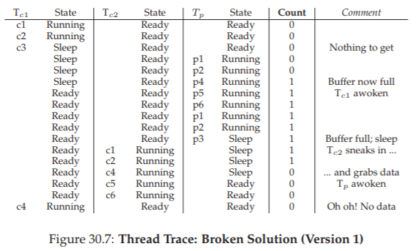
Hình 30.7: Producer/Consumer Threads (phiên bản 1)
Một giải pháp bị lỗi (A Broken Solution)
Bây giờ, hãy tưởng tượng rằng chúng ta chỉ có một producer và một consumer. Rõ ràng, các hàm put() và get() có critical section (vùng tới hạn) bên trong, vì put() cập nhật buffer, và get() đọc từ nó. Tuy nhiên, chỉ đặt một lock bao quanh code là không đủ; chúng ta cần thêm thứ gì đó nữa. Không ngạc nhiên, thứ đó chính là condition variables (biến điều kiện). Trong lần thử đầu tiên (bị lỗi) này (Hình 30.8), chúng ta có một condition variable duy nhất cond và một lock mutex đi kèm.
int loops; // phải được khởi tạo ở đâu đó...
cond_t cond;
mutex_t mutex;
void *producer(void *arg) {
int i;
for (i = 0; i < loops; i++) {
Pthread_mutex_lock(&mutex);
// p1
if (count == 1)
// p2
Pthread_cond_wait(&cond, &mutex); // p3
put(i);
// p4
Pthread_cond_signal(&cond);
// p5
Pthread_mutex_unlock(&mutex);
// p6
}
}
void *consumer(void *arg) {
int i;
for (i = 0; i < loops; i++) {
Pthread_mutex_lock(&mutex);
// c1
if (count == 0)
// c2
Pthread_cond_wait(&cond, &mutex); // c3
int tmp = get();
// c4
Pthread_cond_signal(&cond);
// c5
Pthread_mutex_unlock(&mutex);
// c6
printf("%d\n", tmp);
}
}
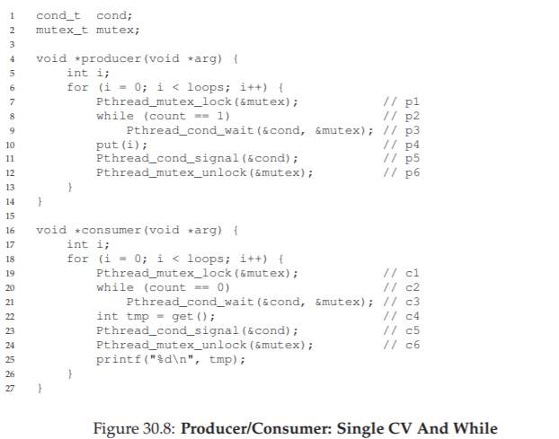
Hình 30.8: Producer/Consumer – Một CV duy nhất và câu lệnh If
Hãy phân tích logic signaling (báo hiệu) giữa producer và consumer. Khi một producer muốn điền dữ liệu vào buffer, nó sẽ chờ cho đến khi buffer rỗng (p1–p3). Consumer có logic tương tự, nhưng chờ một điều kiện khác: buffer đầy (c1–c3).
Với chỉ một producer và một consumer, code trong Hình 30.8 hoạt động. Tuy nhiên, nếu có nhiều hơn một thread thuộc mỗi loại (ví dụ: hai consumer), giải pháp này có hai vấn đề nghiêm trọng. Đó là gì? … (tạm dừng để suy nghĩ) …
Hãy hiểu vấn đề đầu tiên, liên quan đến câu lệnh if trước khi gọi wait. Giả sử có hai consumer (Tc1 và Tc2) và một producer (Tp).
- Đầu tiên, một consumer (Tc1) chạy; nó acquire lock (c1), kiểm tra xem có buffer nào sẵn sàng để tiêu thụ không (c2), và thấy không có, nên gọi
wait(c3) (thao tác này sẽ release lock). - Sau đó, producer (Tp) chạy. Nó acquire lock (p1), kiểm tra xem tất cả buffer đã đầy chưa (p2), và thấy chưa, nên tiếp tục điền dữ liệu vào buffer (p4). Producer sau đó signal rằng buffer đã được điền (p5). Quan trọng là, thao tác này chuyển Tc1 từ trạng thái ngủ trên condition variable sang ready queue; Tc1 giờ đã sẵn sàng chạy (nhưng chưa chạy ngay).
- Producer tiếp tục cho đến khi nhận ra buffer đã đầy, lúc này nó ngủ (p6, p1–p3).
Vấn đề xảy ra ở đây: một consumer khác (Tc2) chen vào và tiêu thụ giá trị duy nhất trong buffer (c1, c2, c4, c5, c6), bỏ qua bước chờ ở c3 vì buffer đang đầy.
Bây giờ, giả sử Tc1 chạy; ngay trước khi trở về từ wait, nó re-acquire lock và sau đó return. Nó gọi get() (c4), nhưng không còn dữ liệu nào trong buffer để tiêu thụ! Một assertion sẽ kích hoạt, và code không hoạt động như mong muốn.
Rõ ràng, chúng ta cần phải ngăn Tc1 cố gắng tiêu thụ khi Tc2 đã “lén” tiêu thụ giá trị duy nhất trong buffer mà producer vừa tạo ra. Hình 30.9 sẽ minh họa hành động của từng thread, cũng như trạng thái của chúng trong scheduler (Ready, Running, hoặc Sleeping) theo thời gian.
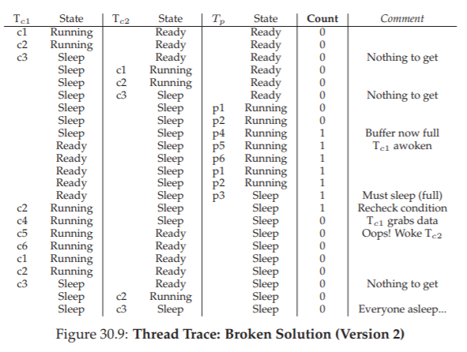
Hình 30.9: Vết vạch luồng: Lời giải bị lỗi (phiên bản 1)
Vấn đề phát sinh vì một lý do đơn giản: sau khi producer đánh thức Tc1, nhưng trước khi Tc1 thực sự chạy, trạng thái của bounded buffer đã thay đổi (nhờ Tc2). Việc signal một thread chỉ đơn thuần đánh thức nó; đó là một gợi ý rằng trạng thái hệ thống đã thay đổi (trong trường hợp này là đã có một giá trị được đặt vào buffer), nhưng không có gì đảm bảo rằng khi thread được đánh thức chạy, trạng thái vẫn còn như mong muốn. Cách diễn giải ý nghĩa của signal này thường được gọi là ngữ nghĩa Mesa (Mesa semantics), theo công trình nghiên cứu đầu tiên xây dựng condition variable theo cách như vậy [LR80]; ngược lại là ngữ nghĩa Hoare (Hoare semantics), khó xây dựng hơn nhưng đưa ra bảo đảm mạnh hơn rằng thread được đánh thức sẽ chạy ngay lập tức khi được đánh thức [H74]. Hầu như mọi hệ thống từng được xây dựng đều sử dụng ngữ nghĩa Mesa.
Tốt hơn, nhưng vẫn lỗi: While, không phải If
May mắn thay, cách khắc phục khá dễ (Hình 30.10): đổi if thành while. Hãy suy nghĩ vì sao điều này hoạt động; lúc này, consumer Tc1 thức dậy và (khi đang giữ lock) lập tức kiểm tra lại trạng thái biến chia sẻ (c2). Nếu tại thời điểm đó buffer rỗng, consumer đơn giản quay lại ngủ (c3). Mệnh đề if tương ứng trong producer (p2) cũng được đổi thành while.
int loops;
cond_t cond;
mutex_t mutex;
void *producer(void *arg) {
int i;
for (i = 0; i < loops; i++) {
Pthread_mutex_lock(&mutex);
// p1
while (count == 1)
// p2
Pthread_cond_wait(&cond, &mutex); // p3
put(i);
// p4
Pthread_cond_signal(&cond);
// p5
Pthread_mutex_unlock(&mutex);
// p6
}
}
void *consumer(void *arg) {
int i;
for (i = 0; i < loops; i++) {
Pthread_mutex_lock(&mutex);
// c1
while (count == 0)
// c2
Pthread_cond_wait(&cond, &mutex); // c3
int tmp = get();
// c4
Pthread_cond_signal(&cond);
// c5
Pthread_mutex_unlock(&mutex);
// c6
printf("%d\n", tmp);
}
}
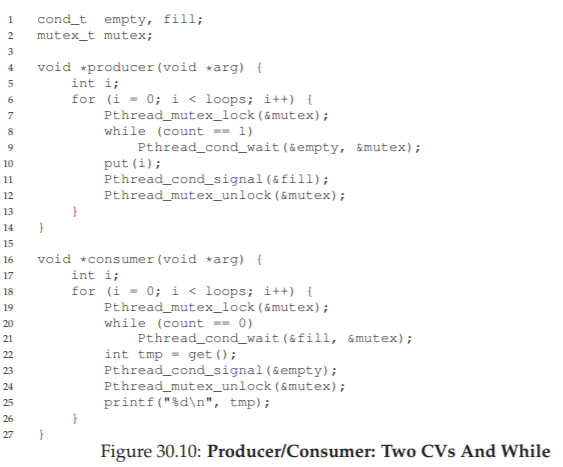
Hình 30.10: Producer/Consumer — Một CV duy nhất và dùng While
Nhờ ngữ nghĩa Mesa, một quy tắc đơn giản cần ghi nhớ khi dùng condition variable là luôn dùng vòng lặp while. Đôi khi bạn không cần kiểm tra lại điều kiện, nhưng việc kiểm tra lại luôn an toàn; cứ làm vậy và yên tâm.
Tuy nhiên, đoạn code này vẫn còn một lỗi — lỗi thứ hai trong hai vấn đề đã nêu. Bạn thấy được không? Nó liên quan đến việc chỉ có một condition variable. Hãy thử tìm ra vấn đề trước khi đọc tiếp. LÀM ĐI! (tạm dừng để bạn suy nghĩ, hoặc nhắm mắt lại...)
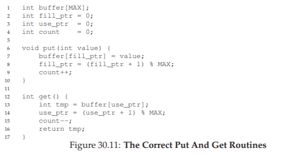
Hình 30.11: Vết vạch luồng: Lời giải bị lỗi (phiên bản 2)
Hãy xác nhận rằng bạn đã tìm ra đúng (hoặc ít nhất là bạn đang tỉnh táo và đọc phần này của sách). Vấn đề xảy ra khi hai consumer chạy trước (Tc1 và Tc2) và cả hai đều đi ngủ (c3). Sau đó, producer chạy, đặt một giá trị vào buffer, và đánh thức một trong các consumer (giả sử Tc1). Producer sau đó lặp lại (giải phóng và acquire lại lock trong quá trình) và cố đặt thêm dữ liệu vào buffer; vì buffer đầy, producer thay vào đó chờ trên condition (đi ngủ). Lúc này, một consumer sẵn sàng chạy (Tc1), và hai thread đang ngủ trên condition (Tc2 và Tp). Chúng ta sắp gây ra một vấn đề: mọi thứ đang trở nên “hấp dẫn”!
Consumer Tc1 sau đó thức dậy bằng cách trả về từ wait() (c3), kiểm tra lại điều kiện (c2), và thấy buffer đầy, nên tiêu thụ giá trị (c4). Consumer này sau đó, quan trọng là, thực hiện signal trên condition (c5), chỉ đánh thức một thread đang ngủ. Tuy nhiên, nó nên đánh thức thread nào? Vì consumer vừa làm rỗng buffer, rõ ràng nó nên đánh thức producer. Tuy nhiên, nếu nó lại đánh thức consumer Tc2 (điều này hoàn toàn có thể, tùy cách quản lý hàng đợi chờ), chúng ta gặp vấn đề. Cụ thể, consumer Tc2 sẽ thức dậy và thấy buffer rỗng (c2), rồi quay lại ngủ (c3). Producer Tp, vốn đang có giá trị để đặt vào buffer, thì vẫn còn ngủ. Consumer còn lại, Tc1, cũng quay lại ngủ. Cả ba thread đều rơi vào trạng thái ngủ — một lỗi hiển nhiên; xem Hình 30.11 để thấy trình tự “thảm họa” này từng bước. Rõ ràng cần có signaling, nhưng phải có định hướng hơn. Một consumer không nên đánh thức consumer khác, mà chỉ đánh thức producer, và ngược lại.
Lời giải cho producer/consumer với bộ đệm đơn (The Single Buffer Producer/Consumer Solution)
Lời giải ở đây một lần nữa rất nhỏ gọn: dùng hai condition variable thay vì một, để signal đúng kiểu thread cần được đánh thức khi trạng thái hệ thống thay đổi. Hình 30.12 cho thấy đoạn code kết quả.
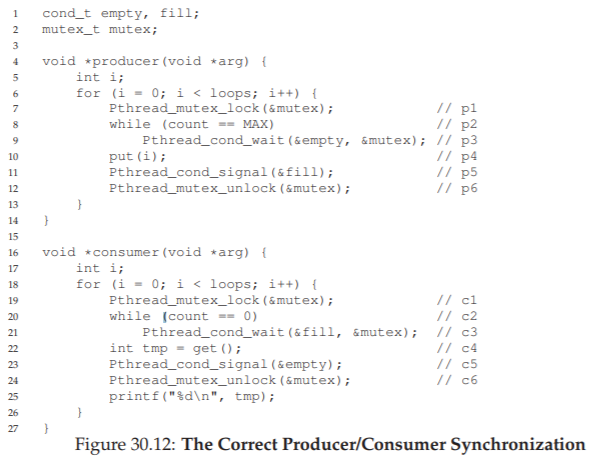
Hình 30.12: Producer/Consumer – Hai Condition Variable và While
Trong đoạn code này, producer thread sẽ wait trên condition empty và signal fill. Ngược lại, consumer thread sẽ wait trên fill và signal empty. Bằng cách này, vấn đề thứ hai đã nêu ở trên được loại bỏ ngay từ thiết kế: một consumer sẽ không bao giờ vô tình đánh thức một consumer khác, và một producer cũng sẽ không bao giờ vô tình đánh thức một producer khác.
Giải pháp Producer/Consumer đúng
Giờ đây, chúng ta đã có một giải pháp producer/consumer hoạt động, dù chưa phải là tổng quát hoàn toàn. Thay đổi cuối cùng chúng ta thực hiện là cho phép tăng concurrency (tính đồng thời) và hiệu suất; cụ thể, chúng ta thêm nhiều buffer slot (ô đệm) hơn, để có thể sản xuất nhiều giá trị trước khi phải ngủ, và tương tự, có thể tiêu thụ nhiều giá trị trước khi phải ngủ.
Với chỉ một producer và một consumer, cách tiếp cận này hiệu quả hơn vì giảm số lần context switch; với nhiều producer hoặc consumer (hoặc cả hai), nó thậm chí cho phép nhiều hoạt động sản xuất hoặc tiêu thụ diễn ra đồng thời, từ đó tăng concurrency. May mắn thay, đây chỉ là một thay đổi nhỏ so với giải pháp hiện tại.
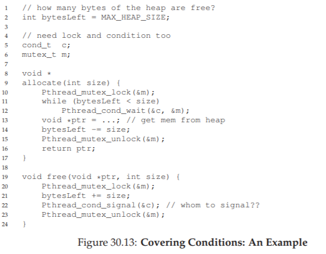
Hình 30.13: Các hàm Put và Get đúng
TIP: DÙNG WHILE (KHÔNG PHẢI IF) CHO CÁC ĐIỀU KIỆN
Khi kiểm tra một điều kiện trong chương trình đa luồng, dùng vòng lặpwhileluôn đúng; dùng câu lệnhifthì có thể đúng, tùy thuộc vào ngữ nghĩa của signaling. Vì vậy, hãy luôn dùngwhilevà code của bạn sẽ hoạt động như mong đợi.Việc dùng
whilebao quanh các kiểm tra điều kiện cũng xử lý được trường hợp spurious wakeup (đánh thức giả). Trong một số thư viện thread, do chi tiết triển khai, có thể xảy ra tình huống hai thread được đánh thức dù chỉ có một signal diễn ra [L11]. Spurious wakeup là một lý do nữa để luôn kiểm tra lại điều kiện mà thread đang chờ.

Hình 30.14: Đồng bộ hóa Producer/Consumer đúng
Thay đổi đầu tiên cho giải pháp đúng này nằm trong chính cấu trúc buffer và các hàm put() và get() tương ứng (Hình 30.13). Chúng ta cũng thay đổi nhẹ các điều kiện mà producer và consumer kiểm tra để quyết định có nên ngủ hay không. Đồng thời, chúng ta cũng thể hiện logic wait và signal đúng (Hình 30.14).
- Producer chỉ ngủ nếu tất cả buffer hiện đang đầy (p2).
- Consumer chỉ ngủ nếu tất cả buffer hiện đang rỗng (c2).
Và như vậy, chúng ta đã giải quyết xong bài toán producer/consumer; giờ là lúc ngồi xuống và thưởng thức một ly nước mát.
30.3 Covering Conditions
Bây giờ, chúng ta sẽ xem thêm một ví dụ nữa về cách sử dụng condition variable. Nghiên cứu mã nguồn này được trích từ bài báo của Lampson và Redell về hệ điều hành Pilot [LR80], cùng nhóm tác giả đã triển khai ngữ nghĩa Mesa được mô tả ở trên (ngôn ngữ họ dùng là Mesa, do đó có tên gọi này).
Vấn đề họ gặp phải được minh họa rõ nhất qua một ví dụ đơn giản: một thư viện multi-threaded memory allocation (cấp phát bộ nhớ đa luồng) đơn giản. Hình 30.15 cho thấy một đoạn code minh họa vấn đề.

Hình 30.15: Covering Conditions – Một ví dụ
Như bạn có thể thấy trong code, khi một thread gọi vào hàm cấp phát bộ nhớ, nó có thể phải chờ cho đến khi có thêm bộ nhớ được giải phóng. Ngược lại, khi một thread giải phóng bộ nhớ, nó sẽ signal rằng đã có thêm bộ nhớ trống.
Tuy nhiên, code trên có một vấn đề: thread nào (trong số nhiều thread có thể đang chờ) sẽ được đánh thức?
Hãy xét kịch bản sau:
- Giả sử hiện có 0 byte bộ nhớ trống; thread Ta gọi
allocate(100), tiếp theo là thread Tb gọiallocate(10)(yêu cầu ít bộ nhớ hơn). - Cả Ta và Tb đều phải wait trên condition và đi ngủ; hiện không đủ bộ nhớ trống để đáp ứng bất kỳ yêu cầu nào.
Tại thời điểm đó, giả sử một thread thứ ba, Tc, gọi free(50). Đáng tiếc, khi nó gọi signal để đánh thức một thread đang chờ, nó có thể không đánh thức đúng thread — cụ thể là Tb, thread chỉ cần 10 byte; trong khi Ta vẫn nên tiếp tục chờ vì chưa đủ bộ nhớ trống.
Do đó, code trong hình không hoạt động đúng, vì thread đánh thức các thread khác không biết thread nào (hoặc những thread nào) cần được đánh thức.
Giải pháp mà Lampson và Redell đề xuất khá đơn giản: thay call pthread_cond_signal() trong code trên bằng pthread_cond_broadcast(), lệnh này sẽ đánh thức tất cả các thread đang chờ. Bằng cách này, chúng ta đảm bảo rằng mọi thread cần được đánh thức sẽ được đánh thức.
Nhược điểm, tất nhiên, là ảnh hưởng hiệu năng tiêu cực, vì có thể chúng ta sẽ đánh thức không cần thiết nhiều thread chưa nên thức. Những thread này sẽ chỉ đơn giản thức dậy, kiểm tra lại điều kiện, rồi lập tức quay lại ngủ.
Lampson và Redell gọi loại condition này là covering condition, vì nó bao quát tất cả các trường hợp mà một thread cần được đánh thức (theo hướng bảo thủ); cái giá phải trả, như đã nói, là có thể đánh thức quá nhiều thread.
Người đọc tinh ý có thể nhận ra rằng chúng ta có thể đã dùng cách tiếp cận này trước đó (xem bài toán producer/consumer với chỉ một condition variable). Tuy nhiên, trong trường hợp đó, chúng ta có một giải pháp tốt hơn, nên đã sử dụng nó.
Nói chung, nếu bạn thấy chương trình của mình chỉ hoạt động khi bạn đổi các lệnh signal thành broadcast (nhưng bạn nghĩ rằng lẽ ra không cần), thì có thể bạn đang có một bug; hãy sửa nó! Nhưng trong những trường hợp như bộ cấp phát bộ nhớ ở trên, broadcast có thể là giải pháp đơn giản và hiệu quả nhất.
30.4 Tóm tắt
Chúng ta đã được giới thiệu một synchronization primitive (nguyên thủy đồng bộ hóa) quan trọng khác ngoài lock: condition variable.
Bằng cách cho phép các thread ngủ khi trạng thái chương trình chưa như mong muốn, condition variable giúp chúng ta giải quyết gọn gàng nhiều vấn đề đồng bộ hóa quan trọng, bao gồm bài toán nổi tiếng (và vẫn còn quan trọng) producer/consumer, cũng như covering condition.
Một câu kết ấn tượng có thể được đặt ở đây, chẳng hạn như: “He loved Big Brothe…”